Since 2017 © MIT CSAIL (HCI Engineering group) [redesign by
moji
].
All Rights Reserved.


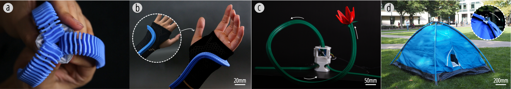
Figure 1. Four 3D-printed objects demonstrating Y-zipper applications, including (a) a single Y-zipper being zipped, (b) a wrist brace for TFCC rehabilitation, (c) a growing kinetic art installation, and (d) rapid assembly and disassembly in tent architecture.
We present Y-zipper, a novel three-sided 3D-printed zipper structure that enables three flexible strips to interlock and transform into a rigid rod-like form. Building on this flex-rigid transition mechanism, we design a specialized slider for rapid and reversible zipping, three actuation methods for manual and automated use, four motion primitives for spatial form generation, and a computational design tool that generates printable zipper geometry from user-defined structures. Controlled experiments evaluate mechanical properties, repeatability, and actuation speed, and functional prototypes demonstrate applications including a medical wrist brace, a kinetic art installation, and a rapidly deployable tent structure.
The rise of personal fabrication in HCI has led to a growing interest in structures that can dynamically transform between physical states, including systems based on 4D printing, bistable mechanisms, and tunable stiffness. One especially compelling class of these systems is the flexible-rigid transition mechanism, where an object can be compliant in one state and load-bearing in another. This capability matters because it enables physical interfaces that are more adaptive, portable, and responsive to context.
Prior work has explored inflatable systems, origami-inspired mechanisms, Velcro-based assemblies, and zipper-like structures to achieve such transitions. Zippers are especially appealing because they are inherently fast, reversible, and efficient as fastening mechanisms. Recent fabrication research has redesigned zipper geometries to support new physical properties and more complex forms, but these designs often trade away one of the zipper's core strengths: rapid and reusable assembly. Intricate tooth geometries may improve stability, yet they can require manual, piece-by-piece assembly and undermine the zipper's speed advantage.
At the same time, zip-chain actuators and spiral zipper joints demonstrate that interlocking chains can create rigid, extendable structures with strong load-bearing performance. However, these systems typically require specialized hardware, tight tolerances, and fixed geometries, making them difficult to personally fabricate or adapt to arbitrary spatial forms. This leaves three open questions: how to personally fabricate flexible-to-rigid transition mechanisms that still close quickly and reversibly, how to customize them for broader classes of 3D shapes, and how to introduce actuation methods that support such structures across scales.
In response, Y-zipper introduces a three-sided 3D-printed zipper that joins three independent flexible straps into a rigid triangular-prism rod. The design draws inspiration from an early multi-way slide-fastener patent, but extends that concept into a fully printable mechanism, a dedicated slider for rapid reversible closure, a design tool for arbitrary spatial curves, and an evaluation of performance under repeated use. The resulting system supports manual, dynamic mechanical, and static mechanical actuation; scales from wearables to meter-scale structures; and achieves large stiffness gains after closure.
The rest of the paper develops the mechanism, actuation methods, motion primitives, design space, design tool, application scenarios, and evaluation results that together position Y-zipper as a reusable platform for rapid, reconfigurable flex-rigid transitions.
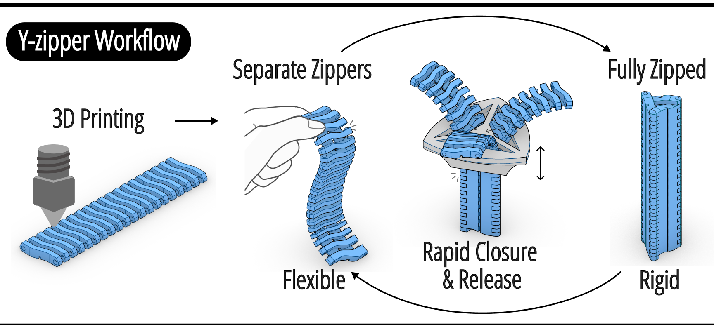
Figure 2. The Y-zipper workflow: three zipper strips are first 3D printed, then assembled into a Y-zipper that transitions between flexible and rigid states using the Y-zipper slider.
The Y-zipper mechanism is designed around three goals: making each strip flexible in the open state, achieving high rigidity in the assembled rod, and ensuring smooth actuation so that strips interlock easily during closure while staying securely fastened afterward. Unlike a conventional two-sided zipper, Y-zipper forms a three-sided triangular prism when closed, which introduces additional design challenges in balancing strength, compliance, and closure stability.
Zipper strip design
Each Y-zipper strip consists of four main elements: teeth, bridges, ball nodes and sockets, and a guide rail. The teeth are responsible for most of the compressive and structural support in the closed state. Rather than simply holding two faces together, their wave-like geometry forms a cyclic, mutually supporting chain across the three faces of the prism. As neighboring teeth overlap and reinforce one another, repeated segments along the strip create a load-bearing rod whose vertical stability comes from the entire interlocking geometry rather than from one isolated tooth connection.
Bridges connect adjacent teeth into a continuous strip. Their role changes across states: in the unzipped state they must remain flexible enough for bending and twisting, while in the zipped state they become the tensile-force-bearing elements that pull neighboring tooth segments together. Bridge thickness therefore strongly influences both compliance before closure and bending resistance after closure. The paper discusses TPU bridges for compliant behavior, as well as stronger alternatives such as articulated joints and fabric-based bridges that expand the design space in later sections.
Each tooth also integrates a ball node on one side and a socket on the other, creating Lego-like interlocking features that primarily resist shear forces. As the zipper closes, the bridges straighten and pull the ball nodes into their sockets, preventing lateral slip between strips. Together, teeth, bridges, and ball-node/socket features divide structural labor across compression, tension, and shear, while the guide rail interfaces with the slider to keep the three strips synchronized during opening and closing.
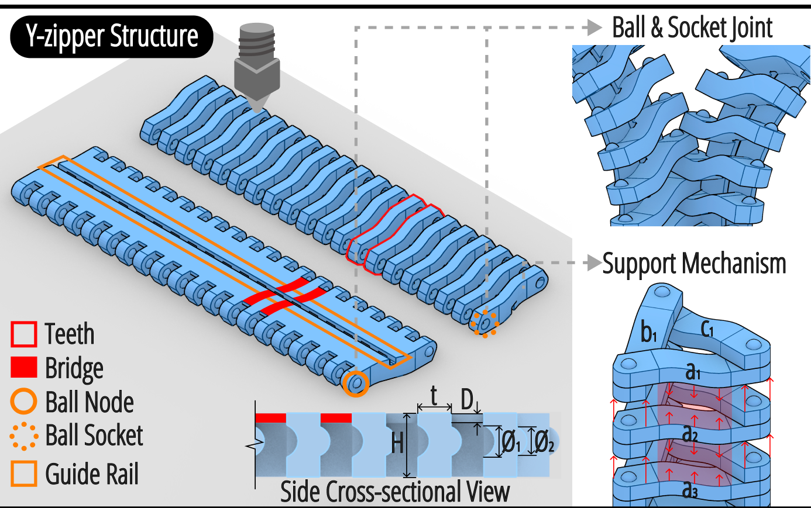
Figure 3. A diagram of the components of Y-zipper strips. Left: each strip consists of teeth, bridges, ball nodes, ball sockets, and a guide rail. Right: the joining mechanism of multiple zipper strips together.
Slider design
The slider is what enables rapid and reversible zipping of all three strips together. It consists of two coordinated modules: an upper separator for opening and a lower converger for closing. During unzipping, the separator's slanted surfaces gradually guide the strips outward, converting longitudinal pulling into lateral separating forces. During zipping, the inward-sloping converger directs the strips toward the center and enforces sequential meshing of the teeth into a rigid rod-like structure.
A rotational lock allows the separator and converger to detach and reconnect, which simplifies the otherwise awkward first step of aligning three independent strips. In practice, users manually align a short section, pull the converger upward to start closure, and then lock both parts together for stable bidirectional operation. This design is a key reason Y-zipper retains the speed and reversibility associated with conventional zippers while operating in a fully 3D, three-sided geometry.
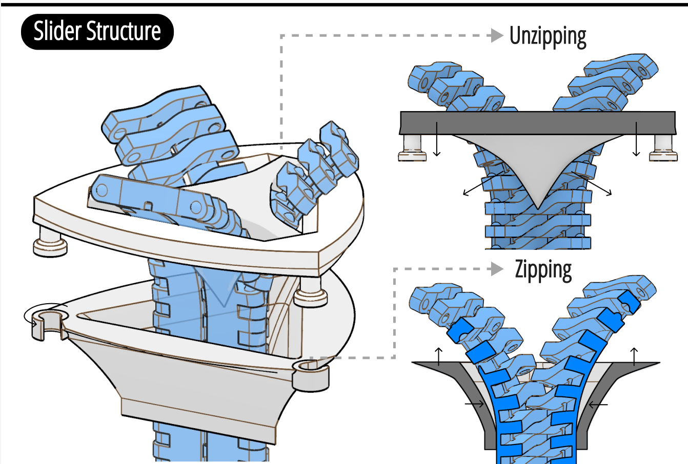
Figure 4. Y-zipper slider modules: the separator guides strips outward during unzipping, and the converger directs them inward for closure. A rotational lock enables easy engagement and stable bidirectional use.
Beyond manual interaction, Y-zipper explores how flexible-rigid transitions can be driven in different ways depending on scale, automation needs, and geometry. The paper presents three actuation methods: manual, dynamic mechanical, and static mechanical actuation.
Manual actuation is the simplest mode. The user pushes or pulls the slider by hand, assisted by an under-surface grip that supports more secure force application. This mode works especially well for small prototypes and wearable devices because it requires no electronics and preserves the intuitive, zipper-like interaction.
Dynamic mechanical actuation turns the slider into a lightweight moving module that crawls along the strips while zipping or unzipping them. This design uses an N20 motor, custom gears that match the zipper's tooth geometry, and a compact electronics package including an ESP32-C3, motor driver, wireless receiver, and battery. Local gear-tooth engagement allows the actuator to advance without predefined step control, and wireless control extends the operating range well beyond manual reach.
Static mechanical actuation instead keeps the actuator fixed in place and feeds the strips into the module, where multiple motors and springs force the strips to interlock at the output point. This avoids the weight limits of a moving slider and supports longer or more curved structures, making it better suited for large-scale or highly shaped assemblies such as the vine example later in the paper. Together, the three modes show how one mechanism can span hand-operated, mobile robotic, and fixed high-force actuation scenarios.
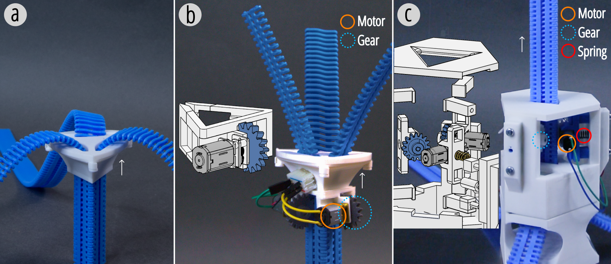
Figure 5. Actuation methods for the Y-zipper: (a) manual slider; (b) dynamic actuator with one motor-gear set; (c) static actuator with three sets of motors, gears, and springs.
To describe the kinds of shapes Y-zipper can form, the paper defines four fundamental motion primitives: straight, bend, coil, and screw. These serve as the basic building blocks for turning zipper strips into different rigidified trajectories after closure.
The straight primitive creates a column-like element useful for direct load-bearing and extension. Bend enables angular change and supports the construction of turning or folding structures. Coil produces winding behavior that is useful both as a shape primitive and later as a storage strategy. Screw extends this vocabulary further by combining axial progression with rotational change. The important point is that the slider's path is not arbitrary; it is determined by the geometry of the strips themselves, much like a nut follows a screw thread.
By formalizing these primitives, the paper creates a reusable design vocabulary that later supports series combinations, branching assemblies, storage systems, and application-specific shapes. Rather than treating each artifact as a one-off mechanism, Y-zipper treats motion and geometry as a composable system.
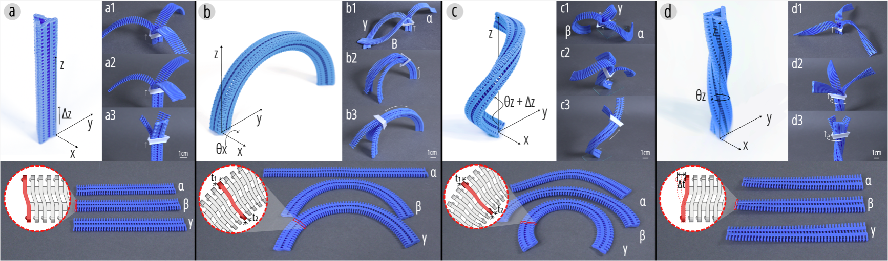
Figure 6. The four basic motion primitives of Y-zipper: straight, bend, coil, and screw.
Integrating primitives into a single rod
Once primitives are defined, they can be connected sequentially to create more complex structures. In a series combination, one slider begins at the base and progressively zips the strips, creating cascading deformations along the sequence. This makes it possible to build linear structures that follow an Eulerian path and transform from flat strips into stable 3D spatial configurations under limited control input.
The paper demonstrates this with a cube-like structure composed of nine straight primitives and eight ninety-degree bend primitives. A single slider closes the entire sequence in about five seconds, transforming flattened strips into a load-bearing spatial form. This example is important because it shows that Y-zipper is not limited to simple columns; it can create richly shaped rigid structures from one continuous actuation path.
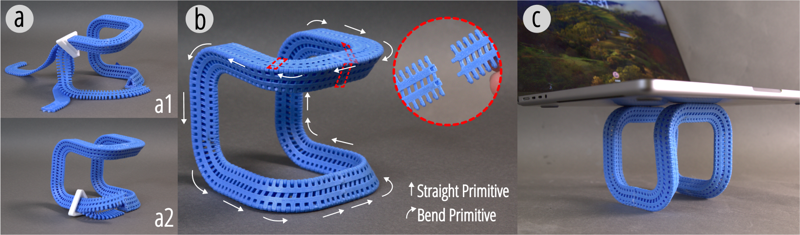
Figure 7. Series mechanism with nine straight and eight 90-degree bend primitives: (a) sequential assembly in 5 seconds; (b) cube-like structure formed from combined primitives; (c) the assembled structure supporting a MacBook.
Joint mechanisms for connecting multiple rods
To connect multiple Y-zipper rods, the system introduces a dedicated joint whose interface matches the hollow interior of closed zipper rods. During closure, the strips naturally snap into the joint and lock into place. This expands the design space beyond continuous paths by supporting branching and network-like spatial assemblies.
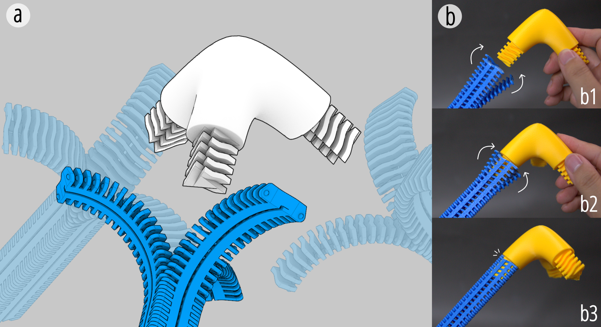
Figure 8. A joint design for connecting multiple Y-zipper rods.
Bridge designs with material diversity
Bridge design is another major axis of the design space. TPU bridges offer compliant behavior and are well suited to shorter structures and robotic prototypes. PLA bridges increase stiffness and enable longer, gravity-resistant objects, provided the print orientation is chosen carefully. Fabric-integrated bridges directly print the tooth structures onto textiles, letting the fabric supply flexibility and tensile strength while the printed geometry supplies controllable interlocking behavior. This combination is especially relevant for wearable applications.
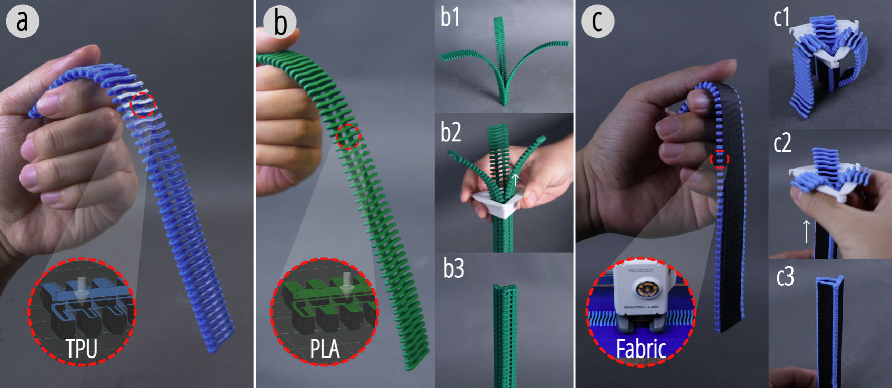
Figure 9. Y-zipper bridges with different material and structure: (a) compliant TPU bridges; (b) kinetic bridges with articulated joints; (c) fabric-integrated flexible bridges via on-fabric printing.
Space-efficient storage strategies
Because long Y-zipper strips are flexible before deployment, they also require effective storage. The paper proposes two approaches: vertical coil storage, which uses height efficiently, and planar spiral storage, which trades footprint for lower total height. These strategies make long strips easier to transport, integrate, and deploy across portable devices or large engineering structures.
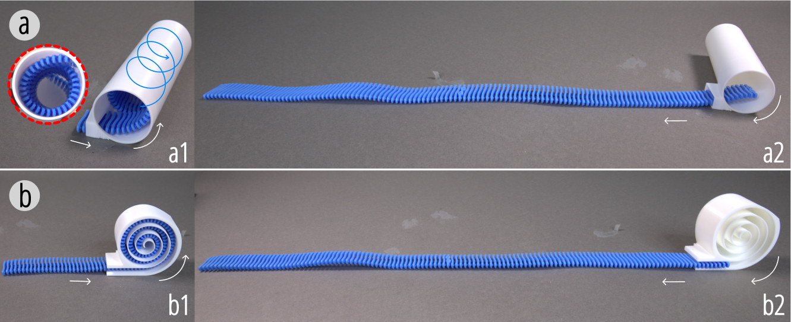
Figure 10. Two storage structures for long Y-zipper strips: (a) vertical coil storage; (b) planar spiral storage.
The Y-zipper design tool uses Rhinoceros 8 and Grasshopper to support the automated design of zipper structures. Its purpose is to help users customize a Y-zipper by selecting primitives, configuring parameters, and eventually generating flattened printable files. The workflow proceeds by selecting a primitive, generating a segment, repeating the process until the desired form is achieved, and then unfolding and splitting the result for fabrication.
The first stage focuses on generating shapes. Users choose a primitive from a library and set parameters such as thickness, width, height, bending angle, and length. The interface shows the current segment in red and previously created segments in blue, making it easier to reason about how a new primitive extends the existing structure. Pre-tested reference values help users quickly reach common configurations while keeping the design space editable.
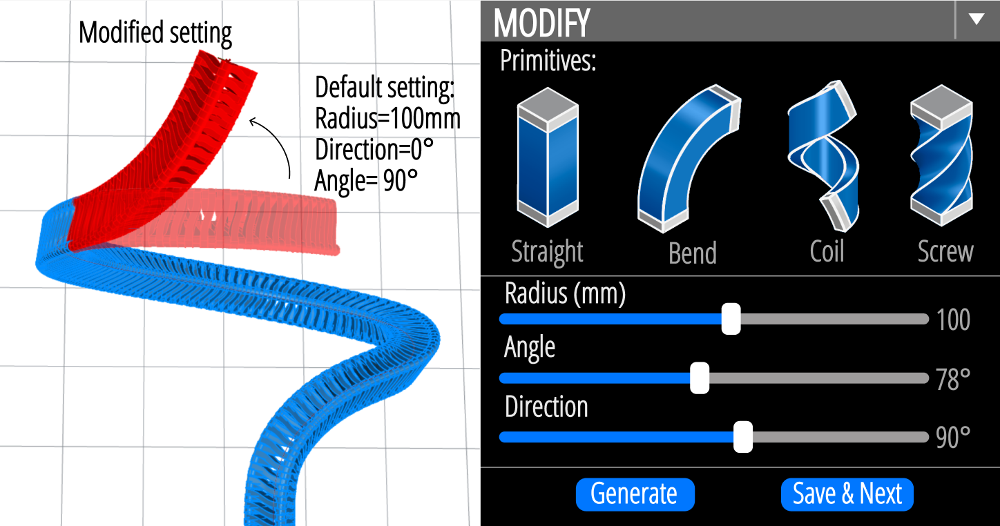
Figure 11. Primitive embedding process in the Y-zipper system.
Once a segment is defined, the user can save and continue generation, building up a sequence of connected primitives. When the structure is complete, the tool flattens the zipper using a recursive unfolding process that preserves adjacency while converting the geometry into a printable layout. For longer structures that exceed printer-bed size, the tool automatically splits the design and inserts interlocking joints at cut locations. Importantly, these joints are distributed across different parts of the final rod so that they do not cluster into one structurally weak location.
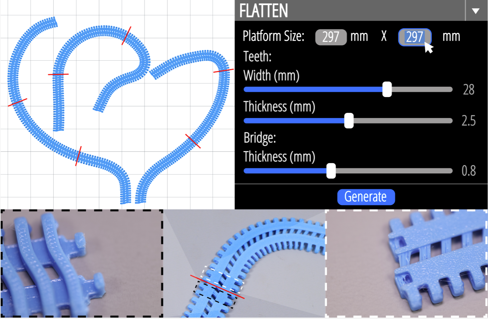
Figure 12. Strip flattening and splitting in the Y-zipper system.
The paper demonstrates Y-zipper through a set of applications that span wearables, robotics, kinetic art, and deployable architecture. Across them, the core value of the mechanism stays consistent: the same strips can remain soft for storage, comfort, or mobility, and then become rigid when zipped for support, load-bearing, or controlled spatial transformation.
Wearable wrist brace for TFCC rehabilitation
The first application is a wrist brace for triangular fibrocartilage complex rehabilitation. In this context, the device should stay flexible enough for comfortable conscious use while still being able to rapidly provide rigidity under risky or unexpected movements. By integrating one zipper strip directly onto fabric, the brace remains soft when unzipped and transforms into a rigid support frame when closed. The paper highlights that the closure can be performed single-handedly while the device is worn, which is especially important for practical medical use.
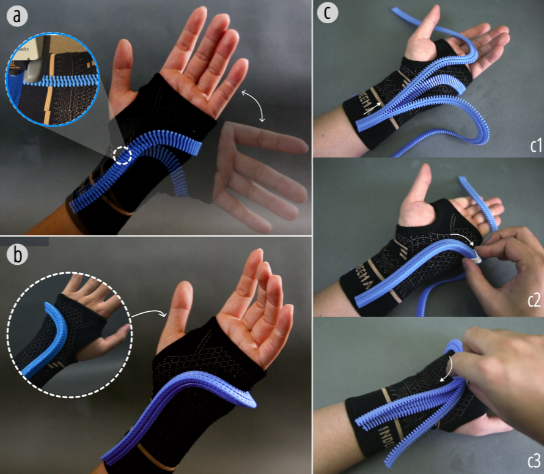
Figure 13. Wrist brace for TFCC rehabilitation: (a) flexible state during conscious use; (b) rigid state after closure; (c) single-handed closure while wearing the brace.
Quadruped robot with adjustable leg length
Y-zipper also functions as a continuously tunable structural member in robotics. In the quadruped robot, each leg is built from a zipped Y-zipper rod driven by a dynamic mechanical actuator with encoder feedback. Retraction spools at the hip store excess strip material, and coordinated actuation lets the robot rapidly change its height from a low crawling configuration to a raised stepping configuration. This demonstrates Y-zipper as more than a binary transition device: it can also serve as a controllable telescoping element.
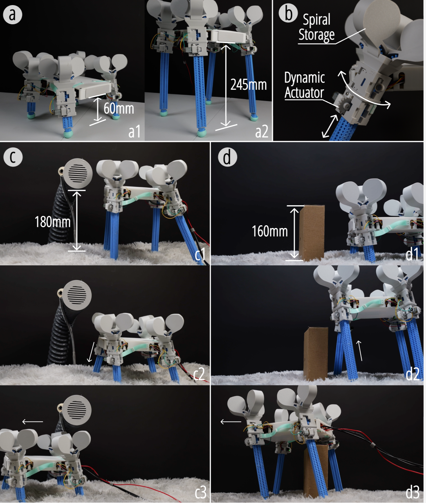
Figure 14. Quadruped robot with actively tunable leg length enabled by Y-zipper: lowered and raised configurations, single leg module, low-clearance crawling, and obstacle traversal.
Kinetic art installation
The kinetic art example uses static actuation to create a growing vine structure that begins as a flower bud, extends through a winding shape, and finally reaches a tall blossoming configuration. Fishing lines inside the petals couple vine growth with flower opening, turning structural deployment into a coordinated visual event. This application shows that Y-zipper can support expressive temporal transformations rather than only utilitarian load-bearing tasks.
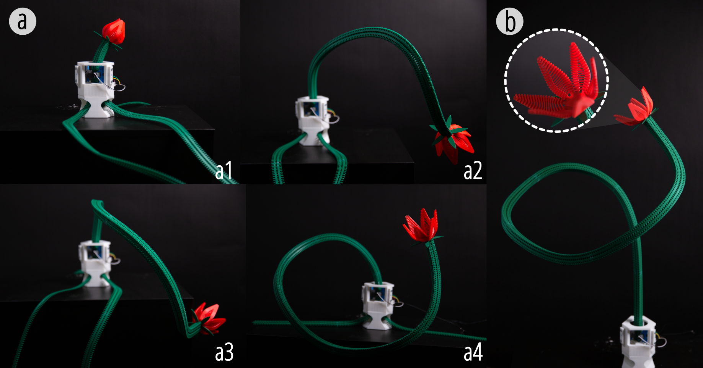
Figure 15. A kinetic art installation using Y-zipper: three zipper strips are drawn together to form a growing vine whose flower opens during extension.
Rapid assembly and disassembly in tent architecture
At a larger scale, the paper replaces the poles of a commercial tent with four Y-zippers connected by joints and anchors. The resulting frame can be assembled manually by one person or closed in parallel with four dynamic actuators. Once opened again, the rigid structure collapses back into flexible strips that can be coiled or folded for transport. This example is especially strong because it highlights not only fast setup but also fast disassembly and portability, making Y-zipper relevant for emergency shelters, outdoor exploration, and portable architectural systems.
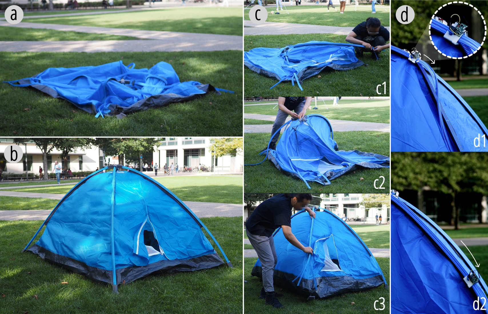
Figure 16. Tent assembly with Y-zippers: (a) initial state; (b) completed tent structure; (c) manual closure by a single person; (d) dynamic actuator closure with four actuators operating in parallel.
The evaluation examines whether Y-zipper can simultaneously support smooth zipping, strong post-closure stability, and reliable behavior under repeated use. The results focus on geometric tolerances, stiffness, simulation, and fatigue.
Ball-socket dimensions and zipping performance
To balance closure resistance with post-closure stability, the paper studies combinations of ball-node and socket diameters using a custom tensile testing setup. As diameter increases, zipping force also increases. If the tolerance is too loose, the closed zipper becomes unstable and may detach; if it is too tight, interlocking fails. The reported performance map identifies a useful range where closure remains smooth while the locked structure stays stable.
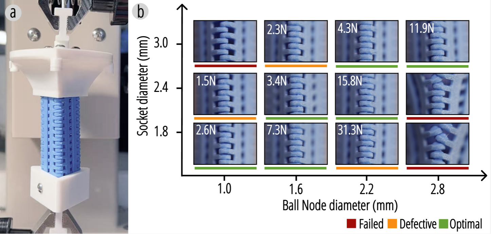
Figure 17. Experimental evaluation of ball-node and socket geometry on zipping performance and post-closure stability, including the tensile test setup and performance map.
Load-bearing limits and stiffness
The paper then investigates how tooth height, bridge thickness, and material choice affect stiffness using three-point bending tests. In the closed state, the three faces form a triangular tube whose bending stiffness depends on both geometry and material modulus. Increasing bridge thickness reduces shear deformation and raises the maximum supported load, while PLA samples exhibit higher stiffness than TPU. Most notably, the same specimen transitions from a relatively compliant strip to a rod with roughly 160 times higher bending rigidity after closure.
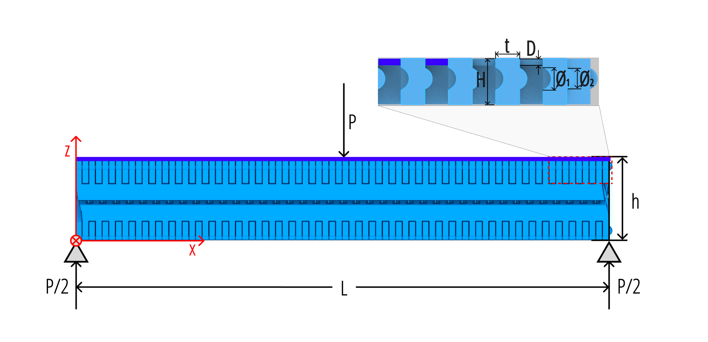
Figure 18. Beam model for a straight Y-zipper rod in three-point bending, with tooth height, face thickness, bridge thickness, support span, and applied load labeled.
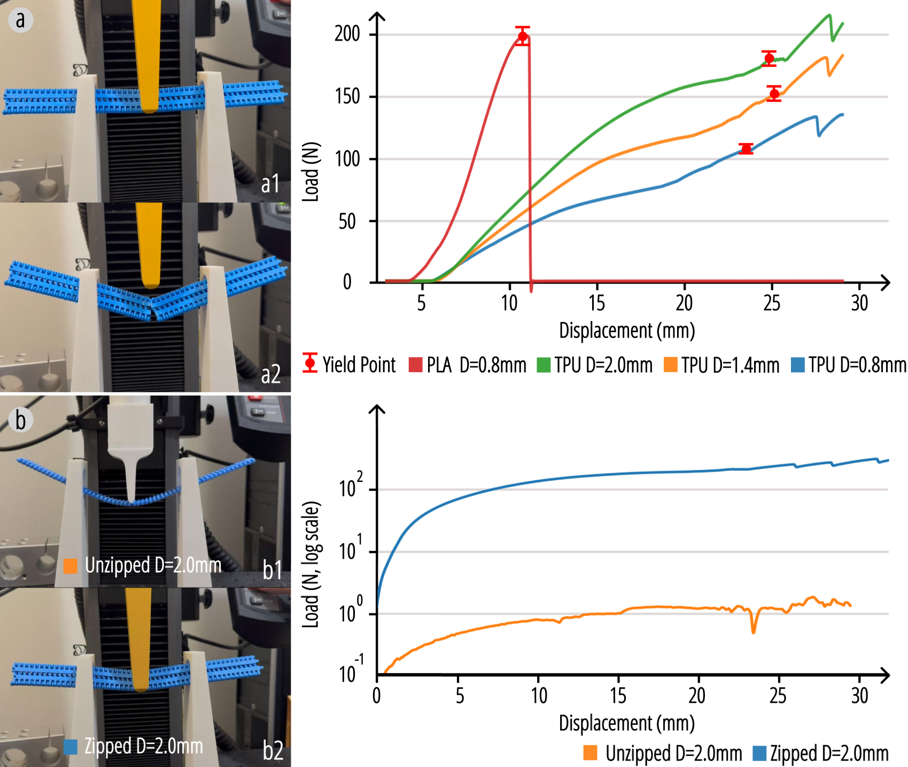
Figure 19. Physical testing of Y-zipper bending resistance, including the experimental setup, load-displacement curves, and the difference between zipped and unzipped states.
Simulations
Structural simulations in Fusion 360 complement the physical bending tests. The rod is fixed at both ends and subjected to a central downward load, and the resulting safety-factor and displacement fields show localized high-stress regions near mid-span together with the expected smooth bending profile. These results align with the physical tests and help explain how the structure distributes load along its length.
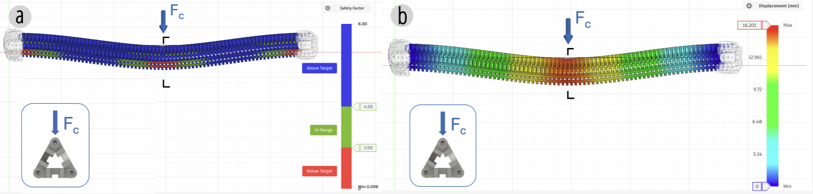
Figure 20. Fusion 360 simulations of a Y-zipper showing (a) safety factor and (b) displacement under load.
Fatigue limits
Finally, the paper runs a fatigue test under repeated dynamic actuation. Samples are mounted vertically and repeatedly opened and closed under motor control for more than 18,000 cycles. The final fracture occurs at the interface between the teeth and bridges, clarifying where the mechanism currently fails under prolonged repetition. This result matters because it gives a realistic boundary on durability rather than only reporting best-case stiffness.
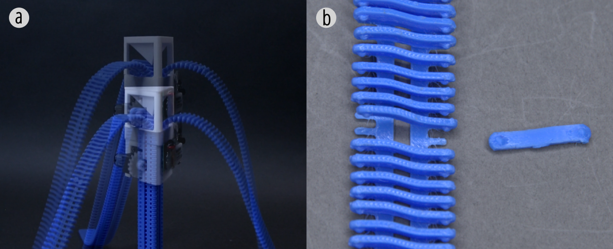
Figure 21. Fatigue limits test: (a) repeated opening-closing experiment over more than 18,000 cycles; (b) the final fracture position.
Y-zipper introduces a three-sided zipper mechanism that enables rapid, reversible, and structurally stable transitions between flexible and rigid states. By combining a printable interlocking geometry, a specialized slider, multiple actuation modalities, a primitive-based design vocabulary, and a computational design tool, the system expands the design space for personally fabricated flex-rigid transition mechanisms. The applications and evaluations together show that Y-zipper can operate across scales, from wearables to deployable architecture, while preserving the zipper's core strengths of speed, reversibility, and reusability.